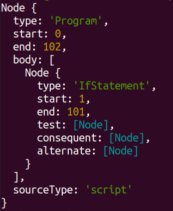

Semantic
Introduction: What is Semantic?
Semantic is a project designed to allow developers to automatically port source code between different programming languages. Right now, Semantic is still in its infancy; it allows for the conversion of basic JavaScript into Python and Ruby. Semantic is open-source, and the source code is available on Github.
Motivation
In linguistics, the 'semantics' of a language refers to the meanings of that language's individual words. The 'syntax' of a language is its structure: how words and symbols have to be ordered to construct a valid sentence. It is from the first term, 'semantic', that this project's name is derived. Semantic aims to separate the syntax of a specific programming language from its semantics, and extract the function of code in order to easily port it between languages.
The ability to port code to different languages has many potential benefits to developers. Chief among these is the ability to easily port libraries between different programming languages. This is of immense benefit to developers, as there are many libraries of great utility that may only be available in a handful of languages; as such, developers wishing to use the functionality of these libraries are limited in terms of what programming language they want to use. For example, several valuable graphics libraries are only available in JavaScript, such as three.js and Electron. Another use case is libraries that implement the same features, but in very different ways. For example, setting up a web server in Java requires either interacting with sockets and bufferstreams directly, or using a complex library like Apache Tomcat. In Python it can be as simple as installing Flask and running a one-line script. Being able to access high-value libraries from a wide set of languages, as well as being able to use them with a standard interface, would save a great deal of development time- a library would only have to be learned once, and its functionality could be accessed from a variety of different languages. Additionally, this would remove the need for a developer to implement something themselves, that already exists in a library, just because that library is in another language.
I have previously written about how to write language-agnostic code. I see writing idiomatic code to be a potential roadblock of progress, particularly by its tendency to amplify technical debt, restricting a developer to the language they chose at the start of development. Writing language-agnostic code is important for maximising the portability of code and the freedom of the developer who writes it. This package also intends to work toward this by making code conversion a simpler, more automated process. This would have the added benefit of making a developer's work more marketable, as they would be able to easily convert any libraries they write to other languages, increasing the market for their code.
Other benefits include: reducing technical debt by making it easier to switch language during the production of software; making code easier to port between different platforms; helping developers to not worry about what language they choose to use at the start of a project; and many more.
Getting Started
Using semantic is really straightforward. In order to use semantic in a project, install it like any other npm package while in your project directory:
npm install @mickey-gs/semantic
To use the project's features, import them from the package like so:
import { toRuby, toPython } from "@mickey-gs/semantic"
const jsCode = "console.log('Some example code')" // the code can come from the same script or an external file, as long as it is passed as a string
const rubyCode = toRuby(jsCode)
const pythonCode = toPython(jsCode)
Running Tests
Semantic uses a list of example JavaScript files for its tests, which should be installed by cloning the Github repository. This can be achieved by running
git clone https://github.com/mickey-gs/semantic.git
Once these are installed in your project's directory, Semantic's test cases can be ran by moving into the directory created
cd semantic
installing prompt-sync
npm install prompt-sync
and running
npm test
A list of features will be displayed, each of which has been implemented in Semantic. When one is chosen, a script written in JS and making use of this language feature will be displayed, first in its original form and then after being converted to Ruby and Python by Semantic.
Features
While this project does not support the full feature set of Node.js at this time, it supports enough features to build some basic but fully functional applications. As of the time of writing, the project supports:
- Command Line I/O, using prompt-sync
- File I/O
- Functions, including higher order functions (functions that take other functions as arguments)
- Loops (for, while and do while)
- Arithmetic, operators and variables (including arrays)
Note that prompt-sync should be used with the following syntax in projects that are being transpiled with Semantic:
import PromptSync from 'prompt-sync' const prompt = PromptSync()
This is due to the relative complexity of implementing native function calls for command line input, as opposed to prompt-sync's more conventional API. I thought it would be more important to implement support for prompt-sync and continue development on the rest of the program than to focus on command line input, although I do intend to eventually support native functionality.
Development has so far been based on the outline of my guide to building language-agnostic code. This means that I have written the code for this project mostly in the order I discuss language features in the guide, starting with the basics of a programming language, and working up in complexity. The latest features are the command line I/O and file I/O systems. The goal of this project is not to fulfill the full specification of JavaScipt in other languages, with lots of language-specific features and abstractions, but to implement enough for useful, maintainable code to be ported easily. The focus will then shift to expanding the scope of the project, incorporating other languages and technologies.
There are several reasons for avoiding implementing all of JavaScript's full feature set. These include saving development time for more immediately useful language features, discouraging the type of language specificity this project is trying to aid in reducing, and that other languages may not even implement said features.
One feature I did choose to implement was higher order functions. This is because both JavaScript and Python support it natively, Ruby supports it through the use of specific syntax and C++ (a language that I would like to support in the future) supports it through the use of function pointers. This feature was an ideal candidate for implementation as a high-level abstraction, due to both having a valid use in development (runtime polymorphism), and being readily available in my target languages. Additionally, function pointers have a long history of use, having been available since C.
I have developed these features in the order that I have because I first wanted to build a solid, foundational MVP to demonstrate Semantic and its use. Now that this is completed, I want to move on to supporting advanced language features that are commonly used in popular libraries, and supporting other languages.
Goals
So far, I have focused on implementing more basic language features in two languages that are quite similar to JavaScript. The next steps in development would then logically be implementing more advanced language features, and addressing languages that are less similar to JavaScript.
The eventual goal of this project is to make the porting of libraries to other languages a more streamlined and automated process, eliminating the need for developers to commit to a certain language for development solely based on the libraries available in it.
The first true milestone of this project after what has been achieved already would be to convert an existing library written in Node.js to another language. This would both demonstrate the massive potential value this project offers to developers, and reflect a significant checkpoint in terms of implementing support for the set of language features used by 'real' projects (that is, projects of value with real life use cases).
There are several features that would have to be added to the project for this to become a viable use case. Many popular libraries take an object-oriented approach to development, such as three.js, and acorn.js (another popular AST parser for JavaScript). For this project to be able to port these libraries, it would have to support generating class structures in other languages, so this is a major goal for the future.
Another very common feature is importing code from other files- however, this is implemented in a very different manner across different languages (C++'s header files, Java imports, JavaScript imports). The goal regarding this would therefore primarily be investigating whether it is even possible to automatically generate import statements in a target language.
In terms of language support, moving on to support C++ is another major goal, due to the speed of compiled C++ programs. Additionally, C++ has wide use in industry, from game engines to visual applications. C++ is also a language I know quite well, which makes it preferable to other low-level, compiled languages (such as Rust). The major challenge in this is type inference. Some types can be inferenced easily from assignment to literals (such as strings, vectors, ints, doubles, etc), but other type inferences will pose a major challenge in this project's development.
Additionally, command line input is only supported for the node module prompt-sync. I would like to expand this in future to support native function calls, but as of now the use of prompt-sync is sufficient for development purposes.
Examples
Below, some examples of Semantic's functionality are shown, where a user runs the test script and chooses a selection of options chosen to highlight Semantic's feature.
-Function Calls and Conditional Statements
Here is an example of Semantic's ability to translate function definitions, calls, and conditional statements from JavaScript to Ruby and Python.
npm test
> @mickey-gs/semantic@1.2.1 test
> node test.js
There are several test cases available, each of which showcases some of Semantic's functionality. Pick a test case, and its source code will be displayed, followed by its automatically generated equivalents in Python and Ruby.
Option 1: basics
Option 2: arithmetic
Option 3: functions
Option 4: conditionals
Option 5: loops
Option 6: higher order functions
Option 7: files
Option 8: hangman (long test case- a fully functional hangman game)
Which test would you like to run? 4
************************************
Original script:
// The transpiler should be able to process conditional statements correctly, including statements with consequent and alternate statements.
function squareOrCube(num) {
let square = (Math.floor(Math.sqrt(num)) == Math.sqrt(num))
let cube = (Math.floor(Math.cbrt(num)) == Math.cbrt(num))
if (square && cube) {
return "This number is a square and a cube!"
}
else if (square) {
return "This number is a square!"
}
else if (cube) {
return "This number is a cube!"
}
else {
return "This number isn't very interesting."
}
}
function isEven(num) {
return (num % 2 == 0 ? 'even' : 'odd')
}
console.log(squareOrCube(64))
console.log(squareOrCube(9))
console.log(squareOrCube(125))
console.log(squareOrCube(37))
console.log(isEven(4))
************************************
Ruby code:
def squareOrCube(num)
square = (Math.sqrt(num)) == Math.sqrt(num).floor
cube = (Math.cbrt(num)) == Math.cbrt(num).floor
if square && cube
return "This number is a square and a cube!"
elsif square
return "This number is a square!"
elsif cube
return "This number is a cube!"
else
return "This number isn't very interesting."
end
end
def isEven(num)
return ((num % 2) == 0 ? "even" : "odd")
end
puts((squareOrCube(64)).to_s)
puts((squareOrCube(9)).to_s)
puts((squareOrCube(125)).to_s)
puts((squareOrCube(37)).to_s)
puts((isEven(4)).to_s)
************************************
Python code:
import math
def squareOrCube(num):
square = math.floor(math.sqrt(num)) == math.sqrt(num)
cube = math.floor(((num) ** (1. / 3))) == ((num) ** (1. / 3))
if square and cube:
return "This number is a square and a cube!"
elif square:
return "This number is a square!"
elif cube:
return "This number is a cube!"
else:
return "This number isn't very interesting."
def isEven(num):
return ("even" if (num % 2) == 0 else "odd")
print(str(squareOrCube(64)))
print(str(squareOrCube(9)))
print(str(squareOrCube(125)))
print(str(squareOrCube(37)))
print(str(isEven(4)))
-Loops
The test below shows Semantic's ability to accurately transpile loops, combined with conditions and function definitions. I have written these in the style I advocate for in my guide to writing language-agnostic code.
npm test
> @mickey-gs/semantic@1.2.1 test
> node test.js
There are several test cases available, each of which showcases some of Semantic's functionality. Pick a test case, and its source code will be displayed, followed by its automatically generated equivalents in Python and Ruby.
Option 1: basics
Option 2: arithmetic
Option 3: functions
Option 4: conditionals
Option 5: loops
Option 6: higher order functions
Option 7: files
Option 8: hangman (long test case- a fully functional hangman game)
Which test would you like to run? 5
************************************
Original script:
// These test cases cover loops, recursion and arrays
function mean(array) {
let i = 0
let sum = 0
while (i < array.length) {
sum += array[i]
i += 1
}
return sum / array.length
}
function sum(array) {
let sum = 0
for (let i = 0; i < array.length; i++) {
sum += array[i]
}
return sum
}
function factorial(integer) {
if (integer == 1 || integer == 0) return 1
return integer * factorial(integer - 1)
}
console.log('The mean of the numbers 1 to 10: ' + mean([1, 2, 3, 4, 5, 6, 7, 8, 9, 10]))
console.log('The sum of the numbers 1 to 10: ' + sum([1, 2, 3, 4, 5, 6, 7, 8, 9, 10]))
console.log('10 factorial: ' + factorial(10))
************************************
Ruby code:
def mean(array)
i = 0
sum = 0
while (i < array.length)
sum += array[i]
i += 1
end
return sum / array.length
end
def sum(array)
sum = 0
i = 0
while (i < array.length)
sum += array[i]
i += 1
end
return sum
end
def factorial(integer)
if integer == 1 || integer == 0
return 1
end
return integer * factorial(integer - 1)
end
puts("The mean of the numbers 1 to 10: " + (mean([1, 2, 3, 4, 5, 6, 7, 8, 9, 10])).to_s)
puts("The sum of the numbers 1 to 10: " + (sum([1, 2, 3, 4, 5, 6, 7, 8, 9, 10])).to_s)
puts("10 factorial: " + (factorial(10)).to_s)
************************************
Python code:
def mean(array):
i = 0
sum = 0
while (i < len(array)):
sum += array[i]
i += 1
return sum / len(array)
def sum(array):
sum = 0
i = 0
while (i < len(array)):
sum += array[i]
i += 1
return sum
def factorial(integer):
if integer == 1 or integer == 0:
return 1
return integer * factorial(integer - 1)
print("The mean of the numbers 1 to 10: " + str(mean([1, 2, 3, 4, 5, 6, 7, 8, 9, 10])))
print("The sum of the numbers 1 to 10: " + str(sum([1, 2, 3, 4, 5, 6, 7, 8, 9, 10])))
print("10 factorial: " + str(factorial(10)))
-Higher Order Functions
Higher order functions are a common and easy-to-use method of implementing run-time polymorphism in a program. Semantic is able to recognise when they are used, and correct Ruby code to use the syntax for them to work.
npm test
> @mickey-gs/semantic@1.2.1 test
> node test.js
There are several test cases available, each of which showcases some of Semantic's functionality. Pick a test case, and its source code will be displayed, followed by its automatically generated equivalents in Python and Ruby.
Option 1: basics
Option 2: arithmetic
Option 3: functions
Option 4: conditionals
Option 5: loops
Option 6: higher order functions
Option 7: files
Option 8: hangman (long test case- a fully functional hangman game)
Which test would you like to run? 6
************************************
Original script:
function calculator(a, b, func) {
return func(a, b)
}
function multiply(a, b) {
return a * b
}
function exponentiate(a, b) {
return Math.pow(a, b)
}
console.log(calculator(multiply(2, 5), 5, multiply))
************************************
Ruby code:
def calculator(a, b, func)
return func.call(a, b)
end
def multiply(a, b)
return a * b
end
def exponentiate(a, b)
return (a) ** (b)
end
puts((calculator(multiply(2, 5), 5, method(:multiply))).to_s)
************************************
Python code:
import math
def calculator(a, b, func):
return func(a, b)
def multiply(a, b):
return a * b
def exponentiate(a, b):
return math.pow(a, b)
print(str(calculator(multiply(2, 5), 5, multiply)))
-File I/O
File I/O systems can vary widely in terms of API in different languages. The example below shows some common operations that can be converted to using the correct calls for other languages.
npm test
> @mickey-gs/semantic@1.2.1 test
> node test.js
There are several test cases available, each of which showcases some of Semantic's functionality. Pick a test case, and its source code will be displayed, followed by its automatically generated equivalents in Python and Ruby.
Option 1: basics
Option 2: arithmetic
Option 3: functions
Option 4: conditionals
Option 5: loops
Option 6: higher order functions
Option 7: files
Option 8: hangman (long test case- a fully functional hangman game)
Which test would you like to run? 6
************************************
Original script:
function calculator(a, b, func) {
return func(a, b)
}
function multiply(a, b) {
return a * b
}
function exponentiate(a, b) {
return Math.pow(a, b)
}
console.log(calculator(multiply(2, 5), 5, multiply))
************************************
Ruby code:
def calculator(a, b, func)
return func.call(a, b)
end
def multiply(a, b)
return a * b
end
def exponentiate(a, b)
return (a) ** (b)
end
puts((calculator(multiply(2, 5), 5, method(:multiply))).to_s)
************************************
Python code:
import math
def calculator(a, b, func):
return func(a, b)
def multiply(a, b):
return a * b
def exponentiate(a, b):
return math.pow(a, b)
print(str(calculator(multiply(2, 5), 5, multiply)))
-A Hangman Game
This is a longer example, combining many features already mentioned. This is a fully functional hangman game. However, the word chosen to play against is always the same, as this is only a demo, not necessarily a game meant to be played.
import PromptSync from 'prompt-sync'
const prompt = PromptSync()
function hangMan() {
let guesses = []
let gameOver = false
const target = getRandomWord()
while (!gameOver) {
guesses.push(getGuess(guesses))
gameOver = processGuesses(target, guesses)
displayProgress(target, guesses)
}
console.log("Thank you for playing!")
}
function getGuess(guesses) {
let valid = true
let guess = ""
do {
valid = true
guess = prompt('->Enter a letter: ')
if (guess.length !== 1 || !guess.match(/[a-z]/i) || guesses.includes(guess)) {
valid = false
console.log("Please enter a single letter that you haven't guessed before.")
}
} while (!valid)
return guess
}
function processGuesses(target, guesses) {
if (guesses.length == 8) return true
for (let i = 0; i < target.length; i++) {
if (!guesses.includes(target[i])) return false
}
return true
}
function displayProgress(target, guesses) {
let dummyWord = '*' * target.length
for (let i = 0; i < target.length; i++) {
if (guesses.includes(target[i])) {
let dummyArray = dummyWord.split('')
dummyArray[i] = target[i]
dummyWord = dummyArray.join('')
}
}
console.log("->Letters guessed:")
console.log(guesses)
console.log('->Target: ' + dummyWord)
console.log('->Guesses left: ' + (8 - guesses.length))
if (guesses.length == 8) {
console.log("You lose. :(")
return
}
if (dummyWord == target) {
console.log('You Win! Congratulations!')
}
}
function getRandomWord() {
// word chosen randomly by me. This placeholder is used as it is not in the test's scope to choose between a list of genuine random words
return 'burger'
}
hangMan()
************************************
Ruby code:
def hangMan()
guesses = []
gameOver = false
target = getRandomWord()
while (!gameOver)
guesses.push(getGuess(guesses))
gameOver = processGuesses(target, guesses)
displayProgress(target, guesses)
end
puts("Thank you for playing!")
end
def getGuess(guesses)
valid = true
guess = ""
loop do
valid = true
puts "->Enter a letter: "
guess = gets.chomp
if guess.length != 1 || !guess.match(/[a-z]/i) || guesses.include?(guess)
valid = false
puts("Please enter a single letter that you haven't guessed before.")
end
break unless (!valid)
end
return guess
end
def processGuesses(target, guesses)
if guesses.length == 8
return true
end
i = 0
while (i < target.length)
if !guesses.include?(target[i])
return false
end
i += 1
end
return true
end
def displayProgress(target, guesses)
dummyWord = "*" * target.length
i = 0
while (i < target.length)
if guesses.include?(target[i])
dummyArray = dummyWord.split("")
dummyArray[i] = target[i]
dummyWord = dummyArray.join("")
end
i += 1
end
puts("->Letters guessed:")
puts((guesses).to_s)
puts("->Target: " + (dummyWord).to_s)
puts("->Guesses left: " + ((8 - guesses.length)).to_s)
if guesses.length == 8
puts("You lose. :(")
return
end
if dummyWord == target
puts("You Win! Congratulations!")
end
end
def getRandomWord()
return "burger"
end
hangMan()
************************************
Python code:
import re
regex = re.compile("[a-z]")
def hangMan():
guesses = []
gameOver = False
target = getRandomWord()
while ( not gameOver):
guesses.append(getGuess(guesses))
gameOver = processGuesses(target, guesses)
displayProgress(target, guesses)
print("Thank you for playing!")
def getGuess(guesses):
valid = True
guess = ""
while True:
valid = True
guess = input("->Enter a letter: ")
if len(guess) != 1 or not regex.match(guess) or guess in guesses:
valid = False
print("Please enter a single letter that you haven't guessed before.")
if not ( not valid):
break
return guess
def processGuesses(target, guesses):
if len(guesses) == 8:
return True
i = 0
while (i < len(target)):
if not target[i] in guesses:
return False
i += 1
return True
def displayProgress(target, guesses):
dummyWord = "*" * len(target)
i = 0
while (i < len(target)):
if target[i] in guesses:
dummyArray = list(dummyWord)
dummyArray[i] = target[i]
dummyWord = "".join(dummyArray)
i += 1
print("->Letters guessed:")
print(str(guesses))
print("->Target: " + str(dummyWord))
print("->Guesses left: " + str((8 - len(guesses))))
if len(guesses) == 8:
print("You lose. :(")
return
if dummyWord == target:
print("You Win! Congratulations!")
def getRandomWord():
return "burger"
hangMan()
References
This project is made possible by @babel/parser, a tool that allows for the conversion of JavaScript code into an abstract syntax tree (AST). An abstract syntax tree is a representation of a given program that is not associated with any specific programming language, consisting of a tree structure of nodes. Each node describes some stage of the program's execution, and may have its own children nodes. This structure is very well suited to describing program execution, as it can easily describe the functionality of recursive elements, such as nested loops and conditional statements. Below, an example AST (sourced from this Wikipedia article) can be seen for Euclid's algorithm, which is used to calculate the greatest common divisor of two integers.

ASTs make up a key part of the project's internal workflow, as incoming JS code is first converted into AST form by babel's parser, and then to the target programming language by my own code.
The babel parsing tool is a part of the greater babel.js project, which allows for the translation of JavaScript written using newer language to older versions of JavaScript. It is typically used by developers who want to exploit the features of modern JavaScript but are mindful of possible compatibility issues.
Previous versions of this project used the parser provided by the acorn.js project. When I began work on supporting classes, I found that acorn did not natively support parsing them. To get acorn to work with classes, I would have to use its plugin system, and use code somebody else had written to bridge the gap. For want of a better word, I found this solution quite 'janky'. After some searching, I found @babel/parser, which not only supported parsing classes natively, but also provided support for many new and experimental JavaScript features. I decided that migrating to babel not only provided immediate benefit to myself, but would also be of great value to any potential contributors in future who may wish to work on supporting features of modern or experimental JavaScript. In addition, @babel/parser is built on top of acorn.js, and to a similar specification, which made migration a fairly painless and straightforward process.
Contributing to Development
There are several key resources a developer should be familiar with to contribute to this project. One is the ESTree specification for ASTs, as this is the format that the initial JS code is converted in to. Some small modifications are made to this specification by the team at @babel/parser, so it's worth checking out their official documentation as well. Personally, the easiest way I found to learn more about the spec was to write an example program, have it parsed into an AST, and then traverse the tree produced, printing each node's properties to the console. Another important source will be the official NodeJS documentation, especially what features of the JS ECMA specification it supports, in order to understand the functionality and specification of the input code and accurately convert it into the output. Additionally, the documentation of the target language will be a key resource. So far, this has meant consulting the brilliant Ruby and Python docs, which are great as references for understanding the target language, and duplicating the input code's functionality in the output.
In my experience, the best approach to development on this project so far has been a test-driven one. This is because it allows the specification of the next stage of the project to be created before any actual programming work is done. On a project like this, with such a wide scope, it has been of great benefit to constrain the next stage of development to a specific goal, and then write code in order to reach that goal.
In practice, this entails creating a new test case in the tests/ directory that showcases the features to be worked on next, adjusting test.js, writing code, and running npm test to observe the transpiler's output. When the code that has been written for that test case produces valid code in the target language, it's also important to make sure that all of the previous test cases still produce valid code, and that the new developments haven't broken previous code.
Below, I will explain my own code, as guidance for any interested developers that would like to contribute.
Interface
Due to the fact that, at the time of writing, only two languages are supported for conversion, and each to only one standard, the only functionality important to the end user is converting code from one language to another. For this reason, the only interface between the user and this library is a function for each language that takes JS code as its input, and outputs code in the target language. At this time, this means that the two functions importable from the library are toRuby(code) and toPython(code). Any code contributed for another language should follow this convention.
Overview
Shown below is how the conversion process works for the function toPython(code), as snippets from this project's main file (index.js)
import { PyTranspiler } from "./src/py-transpiler/py-transpiler.js";
import * as babel from "@babel/parser"
export function toPython(code) {
let ast = babel.parse(code, {ecmaVersion: 'latest', sourceType: 'module'})
const transpiler = new PyTranspiler
return transpiler.parse(ast)
}
The code for the Python transpiler and AST parser are imported. The function exported takes JS code as its argument, uses @babel/parser to parse it and create the AST, and returns the transpiler's conversion of the AST to Python. The parse(code) method, used as an interface with the library, has the following structure:
parse(node) {
const code = this.recursiveParse(node)
return this.correct(code)
}
The method recursiveParse(node) will recursively call itself throughout the transpilation process, parsing AST nodes as needed. The correct(code) method makes some language-specific substitutions, such as replacing console.log(value) with print(value).
Converting to AST
This is the first stage of the libraries internal workflow. The @babel/parser package is used to convert the code to an AST object, following the ESTree standard mentioned above. To become familiar with the AST's structure, I found it most useful to recursively examine the node's properties, and the properties of its children.
The Transpiler
For each supported language, there is a corresponding transpiler class, designed to take the AST input and convert it to valid output code. Each class inherits a super class named (creatively) transpiler-super. The transpiler works by recursively examining each node in the AST, examining it, and outputting suitable code in its target language. As an example, I will explain how the Ruby transpiler converts a structure of if/else statements. For context, here is a parent Node object representing a program that consists of an if/else statement. Note the Node of type IfStatement:
The transpiler starts by parsing the node's test property- the condition that has to evaluate to true for the if statement's code to execute. The node's consequent property is then parsed. This is the code that gets executed if the condition evaluates to true. If the consequent consists of only one statement, it is converted to a BlockStatement node. This type of node is meant to hold more than one statement (hence being a block), but it's much easier to just create a block of one statement than write lots of additional code for this edge case. If the if statement has an alternate property (an else statement), that is parsed as well. Because of a quirk in Ruby's design, this method may call this.buffer.deleteLines(1). This is because Ruby ends most of its blocks with the keyword end, but in the case of an if statement followed by an else statement, the if statement's end must be omitted. The transpiler therefore deletes the erroneous end keyword that would be added to the buffer before the else statement is parsed.
IfStatement(node) {
this.buffer.add("if ");
this.recursiveParse(node.test);
if (node.consequent.type != 'BlockStatement') {
let tempNode = {type: 'ReturnStatement'}
Object.assign(tempNode, node.consequent)
node.consequent.type = 'BlockStatement'
node.consequent.body = [tempNode]
this.recursiveParse(node.consequent)
}
else {
this.recursiveParse(node.consequent);
}
if (node.alternate) {
// get rid of unnecessary 'end' in line above
this.buffer.deleteLines(1);
this.buffer.add("else ");
this.recursiveParse(node.alternate);
}
}
The transpiler's design is made simpler by having one method for every type of AST node, and giving it the same name as that type. This allows a central method, recursiveParse(node) to automatically call the correct method for that mode by invoking this[node.type](node). In JavaScript, this means calling a method named node.type with the argument node (the node argument to be translated into code). The recursiveParse(node) method returns the buffer's contents, obtained with the buffer's get() method.
recursiveParse(node) {
this[node.type](node);
return this.buffer.get();
}
These methods for each type of node are added as development continues. The ones that exist now are by no means exhaustive, and do not cover the full scope of the ESTree spec.
The Buffer Class
The first approach I took at outputting the translated code was by adding it to a string that was an instance variable of the transpiler class. This string acted as a buffer, which was added to repeatedly before being outputted at the code's completion. This approach worked at first, but with the need to automatically indent and dedent blocks of code, I decided to create a more advanced Buffer class. This class holds a string representing the output code, and supports methods designed to make creating formatted output easier, such as indent(), dedent(), trim() (which removes all trailing whitespace from the buffer), newline() and deleteLines(int) (which removes int lines from the end of the buffer). The indent() and dedent() methods control how much white space is added after a new line is taken and before any more code is added.
Corrections with Regex
The final step before the code is outputted is making corrections with regular expressions (regex), which are given a great summary explanation at MDN and a more in-depth view here. Some of these are simply replacing JS-specific keywords with keywords in the output language. For example, the Python transpiler subsitutes all appearances of the && operator with and. These simple, find-and-replace corrections are stored in the class's corrections instance variable. The correct method then makes some more complicated replacements using JavaScript's massively useful replace(string | regex, string | function) method, explained very well by MDN. Each of these replacement functions is explained by the comment preceding it, but for the sake of helpfulness one is explained below:
code = code.replace(/fs\.writeFileSync\((.+),\s(.+)\)/gmi, (match, file, content) => {
return "File.open(" + file + ", 'w') { |file| file.print(" + content + ") }"
})
This code, from the Ruby transpiler, finds all occurences of calls to fs.writeFileSync(file, content). It replaces all of these calls with the Ruby equivalent, which is to call the File.open(file, 'w') method, and pass it a block (the strange-looking code in braces), which prints the contents to the file. A block is similar to an anonymous function- it allows for parameters to be passed to it and carries out a sequence of operations on them. In this case, that means printing the contents variable to the desired file, which is passed in to the block.
The Code
The full source code can be found at this project's Github repository. Each transpiler has its own folder within the larger src folder. For a new contributor, I would suggest either working on implementing class funcionality in the existing transpilers, on building a transpiler for C++ from the existing source code (using the other transpilers as reference), or taking a look at the existing issues, listed at the bottom.
The npm Package
This project is released in the form of an npm package, the page for which can be seen here (although there is no information provided there that is not present on the project's GitHub page).
This npm package works in a similar manner to most others, and does not take much work to update along with writing code for new features. The library's API is defined in the file index.js, which is where the functions toRuby(code) and toPython(code) are also defined. The test script is stored in the file test.js. When a new test case is added, this should be reflected in the tests/ directory, and the test.js script should also be adjusted accordingly.
Existing Issues
Unfortunately, I had a university deadline for handing in my project work, and have had to leave it in its last stable state. I had made some good progress on implementing classes in Ruby, but had to strip that back ahead of the submission date, but this work can still be seen in the commit history of the src/ directory on Github. I would recommend looking at this work, as it would save a lot of time on implementing class support in Ruby, as well as in implementing classes in Python.
Additionally, for loops have been implemented, but in a fairly basic manner: they are automatically converted into while loops, with the incrementing variable declared just before the while loop and the call to increment the variable as the last line of the loop. However, this approach fails for any for loop that has a continue statement, or any other statement that causes the loop to skip any iterations. Due to the complexity of correcting this behaviour, I prioritised the addition of other features. Any potential contributors should keep this in mind, as this could be a potential cause for incorrect behaviour in an output program in the future.